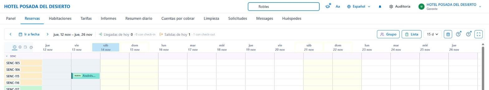

1
Escribe en la casilla Buscar reservas
Haz clic en la casilla Buscar reservas..., arriba, y escribe el nombre o el apellido del huésped. Basta con una parte.

- 1Buscar reservas...: escribe aquí. Aún no sale nada: la búsqueda empieza al presionar la tecla Enter (sección 2).
- 2Pestañas: da igual en cuál estés. La casilla está siempre arriba.
- 3La barra de la reserva: si ya la ves en el Tapechart (Calendario de reservas), también puedes hacer clic en ella. La casilla es más rápida cuando no sabes la habitación ni la fecha.
Qué puedes escribir:
- Nombre o apellido, o solo una parte:
Lauraencuentra a Laura Méndez Soto yRobencuentra a Robles. Da igual si escribes en mayúsculas o minúsculas, y el orden de las palabras. - Número de confirmación, entero o solo el final:
HO0008o0008. - Número de habitación, solo los números:
115, noSENC-115. - Email o teléfono, si la reserva los tiene.
En tu turno: pregunta «¿A nombre de quién está la reserva?». El apellido suele dar menos resultados que el nombre, porque los nombres se repiten más.